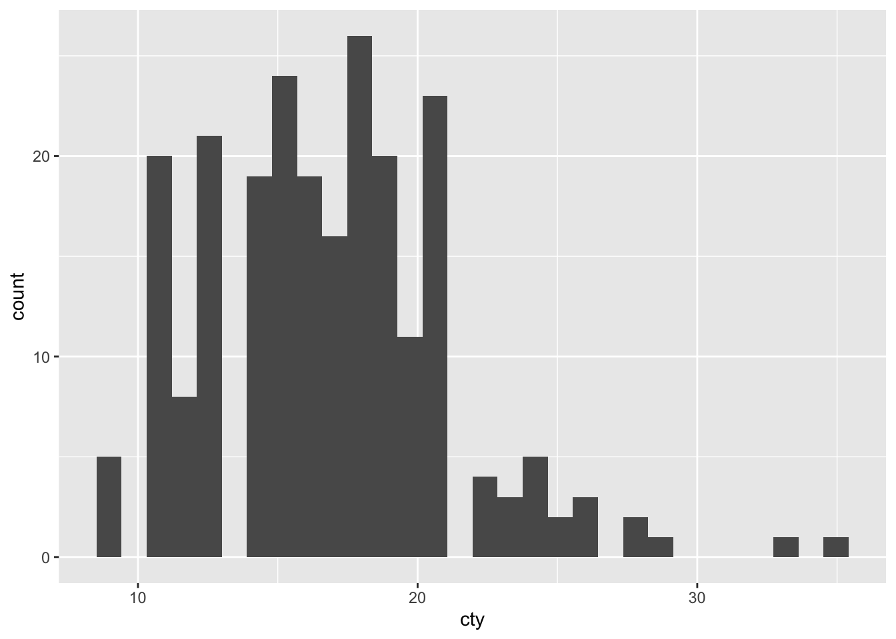
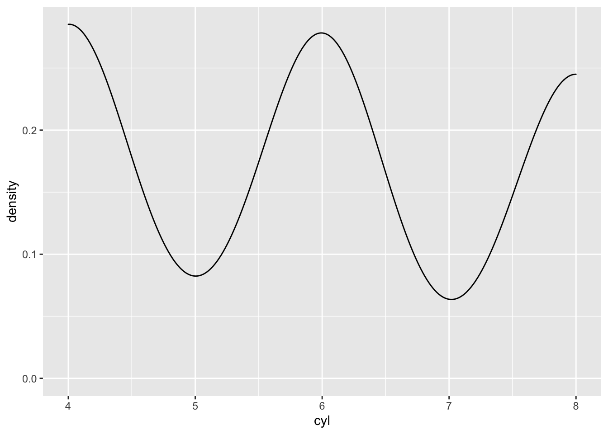
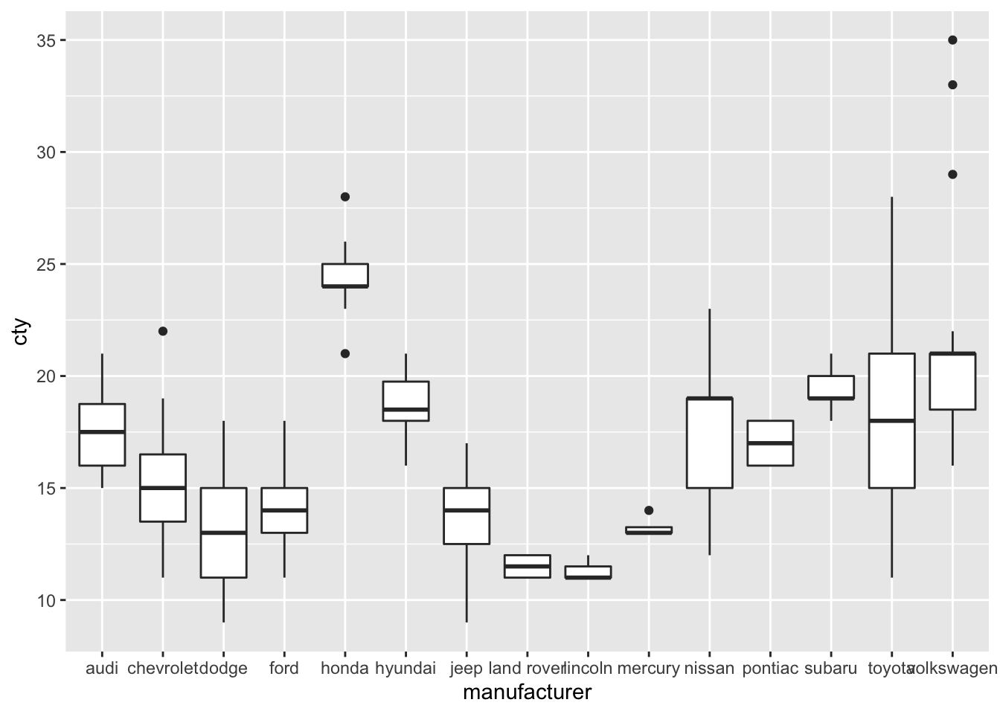
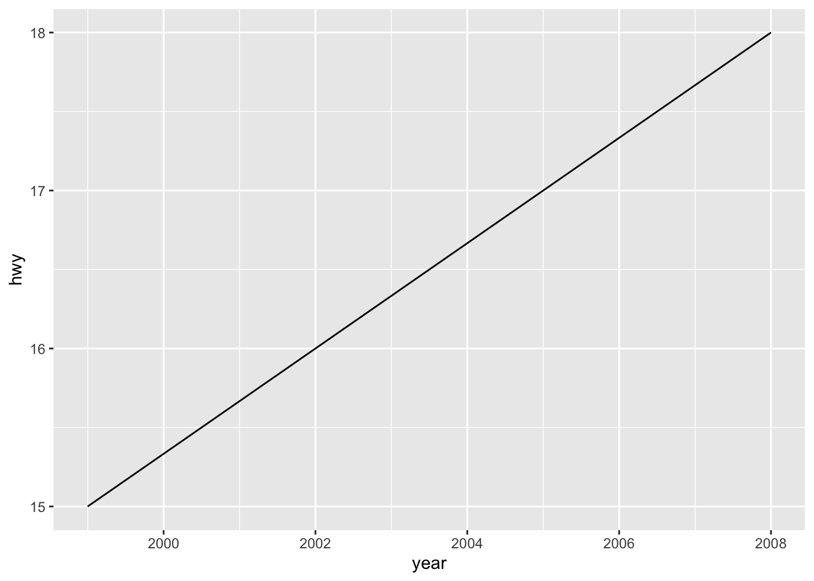
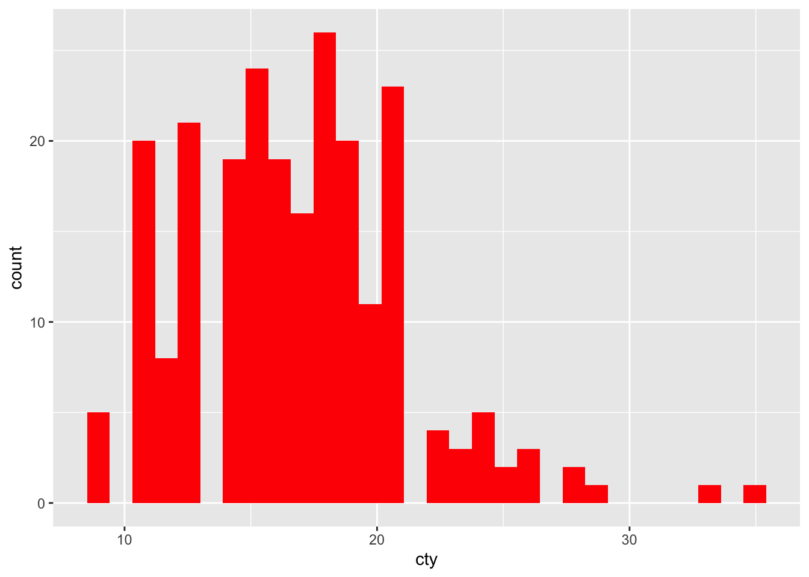
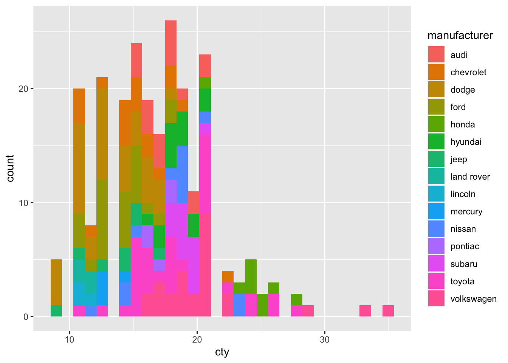
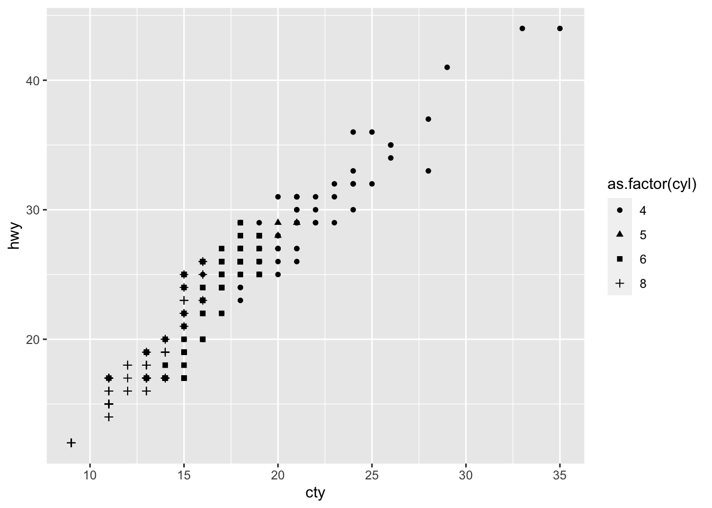
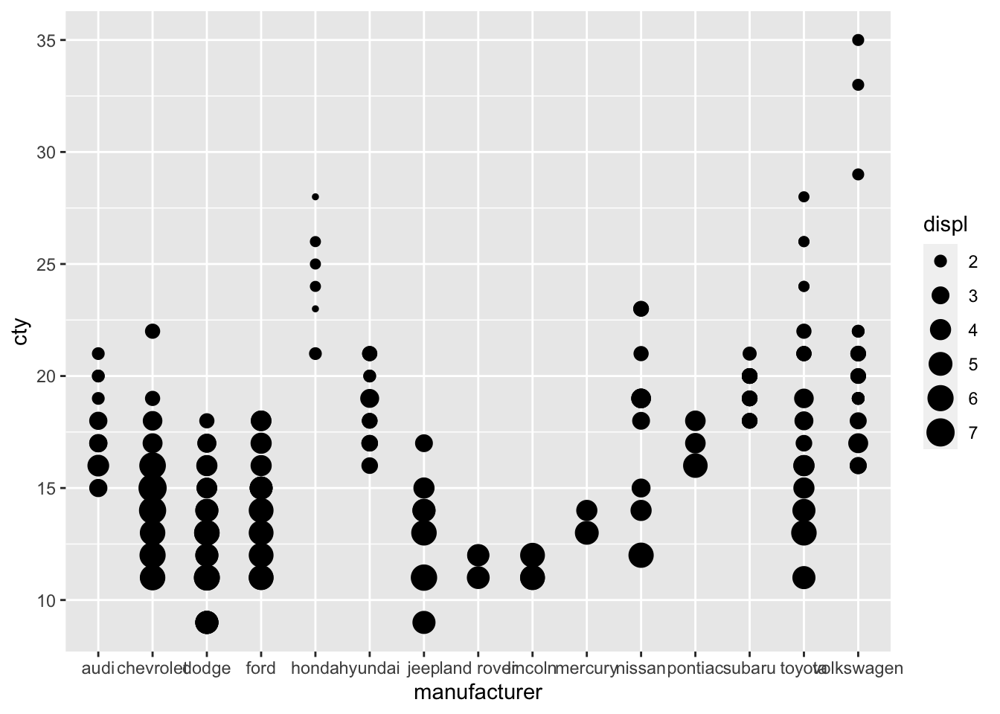

Capítulo 4 ggplot: Principales gráficos
Revisaremos rápidamente gráficos que puedes constuir usando ggplot. Usaremos para este fin mpg.
- Histograma (histogram)
histograma <- ggplot(mpg, aes(x=cty)) +
geom_histogram()
histograma## `stat_bin()` using `bins = 30`. Pick better value with `binwidth`.
- Gráfico de densidad (density plot)
densidad<-ggplot(mpg, aes(x=cyl))+
geom_density()
densidad
- Diagrama de cajas (boxplot)
cajas<-ggplot(mpg, aes(x=manufacturer, y=cty)) +
geom_boxplot()
cajas
- Diagrama de dispersión (scatterplot)
dispersion<-ggplot(mpg, aes(x=cty, y=hwy)) +
geom_point()
dispersion
- Gráfico de líneas (lineplot)
#Filtramos por un modelo en específico
lineas<-ggplot(mpg[mpg$model=="range rover",], aes(x=year, y=hwy, group=manufacturer)) +
geom_line()
lineas
4.1 Intentemos mejorar la visualización
Si bien los ejemplos anteriores son simples en cuanto a código, la calidad de la visualización es poca. Podemos mejorar los gráficos utilizando argumentos y funciones.
4.1.1 Color
Una gran opción para mejorar nuestros gráficos es incorporar colores. Estos pueden ser iguales para todas las formas como aquí:
histograma <- ggplot(mpg, aes(x=cty, fill="red")) +
geom_histogram()
histograma## `stat_bin()` using `bins = 30`. Pick better value with `binwidth`.
¿Lo ingresamos correctamente? ¿Es el color de relleno una variable categórica? Lo correcto es incorporarlo como característica de la forma geométrica:
histograma <- ggplot(mpg, aes(x=cty)) +
geom_histogram(fill="red")
histograma## `stat_bin()` using `bins = 30`. Pick better value with `binwidth`.
¿Y si queremos usar los colores para distinguir en relación a una variable categórica? Ahora sí lo incorporamos al mapeo estético:
histograma <- ggplot(mpg, aes(x=cty, fill=manufacturer)) +
geom_histogram()
histograma## `stat_bin()` using `bins = 30`. Pick better value with `binwidth`.
4.1.2 Formas
Al igual que con los colores, podemos personalizar las formas de nuestros gráficos (en particular de nuestros geom_points()). Para esto modificamos el argumento shape.
dispersion<-ggplot(mpg, aes(x=cty, y=hwy, shape=as.factor(cyl))) +
geom_point()
dispersion
4.1.3 Tamaño
dispersion<-ggplot(mpg, aes(x=trans, y=hwy, size=displ)) +
geom_point()
dispersion